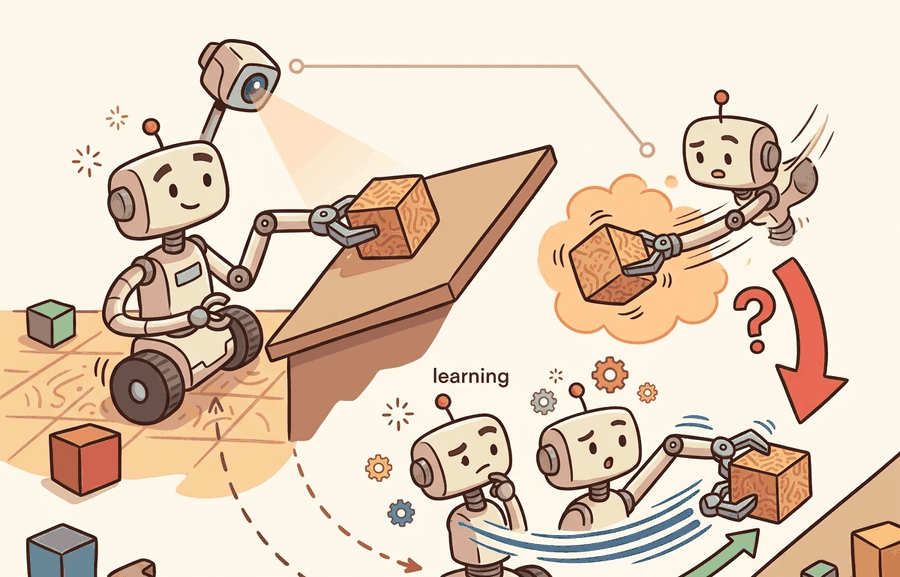

"I grasped the cube in simulation and discovered friction had opinions."
A Pick-And-Place Policy Meeting Contact

This section assumes familiarity with behavior cloning and the distribution-shift problem from section 21.2, and with pick-and-place pipelines from section 42.2. Section 42.5 develops the IL, RL, and VLA policy-learning options in more depth and is worth reading alongside this capstone. The sim-to-real transfer issues raised here recur in section 59.5, and the vision-language action model direction that follows from a strong IL+RL baseline is taken up in section 59.4.
A robot arm hovers over a cluttered bin, camera feed live, and must grasp an object it has never seen at this orientation. Pure imitation learning fails the moment the pose drifts outside training data. Pure reinforcement learning wastes hours of sim time wandering randomly before a single reward fires. The combination, seeding RL with a behavior-cloned policy, is the trick that makes warehouse automation and hospital logistics viable right now, as robot deployments outpace the cost of collecting demonstrations. In this capstone you will build that pipeline end to end: clone a grasp policy from 50 demonstrations, fine-tune it with SAC, and measure exactly where each approach breaks down.
This section develops the technical contract for vision-based robotic pick-and-place (il + rl) into a usable mental model. First we define the object of study, then we connect it to the agent loop, then we test it with a compact implementation.
The key question in Vision-based robotic pick-and-place (IL + RL) is practical: what must the agent know, what can it observe, what action is available, and what evidence shows that the action worked under the stated conditions?
Vision-based pick and place should be judged by the action it improves. A section claim is strong when it names the decision, the measurement, and the failure mode before a larger model or simulator is introduced.
Theory
The core design contract for vision-based pick-and-place with IL+RL has three numbered interfaces that must be specified before any training run. First, the perception interface: an RGB-D frame (typically 640x480 at 30 Hz from a wrist-mounted Intel RealSense D435 or a fixed overhead camera) feeds a spatial feature extractor such as a ResNet-18 FPN that outputs a 256-dimensional object embedding and a 6-DoF pose estimate. Second, the policy interface: the embedding concatenated with 7-dimensional proprioception (joint angles or end-effector pose) enters the BC or SAC policy, which outputs a 6-DoF delta end-effector command at 10-20 Hz. Third, the contact interface: a binary grasp-success signal derived from gripper force thresholding (typically above 5 N on a Robotiq 2F-85 or Franka Hand) triggers the placement phase. Latency across this chain must stay below 50 ms total to avoid the wrist camera overshooting the grasp target; latency spikes above 80 ms reliably cause drops on round objects.
The failure-mode taxonomy for this pipeline has four distinct sites. A perception failure (object pose error above 5 mm or 3 degrees) propagates into an invalid grasp candidate before the policy ever runs. A distribution-shift failure occurs when the BC policy sees an object orientation outside its 50-demonstration training set; the policy's confidence degrades silently and the gripper approaches at the wrong angle. A contact-dynamics failure emerges in sim-to-real transfer: MuJoCo's default contact model uses a Hertzian approximation that underestimates the stiction of rubberized fingertips, so a policy that learned to rely on gripper slide adjustments in simulation will drop objects on real hardware. A reward-shaping failure appears when a dense reward inadvertently makes the RL agent park the gripper near the object without closing, collecting small incremental rewards while avoiding the high-risk contact that earns the sparse +1.
Worked Example
For Vision-based robotic pick-and-place (IL + RL), keep one concrete rollout in view. A sensor reading becomes an estimate, the estimate constrains an action, the action changes the world, and the next observation confirms or contradicts the assumption. The section's idea is useful only if it improves that loop.
Consider a specific case: a behavior-cloning policy trained on 50 teleoperated demonstrations (RGB-D input at 30 Hz, 6-DoF end-effector actions) reaches 72% success on seen object poses but drops to 41% when the object is rotated 45 degrees beyond the training distribution. Fine-tuning with SAC for 200k environment steps, using a sparse reward (+1 on successful placement, -0.1 per dropped object) and the BC policy as initialization, recovers to 68% on the rotated condition, while a from-scratch RL baseline needs 1M steps to reach 55%. The key observable: the BC initialization keeps the RL agent near valid grasps during early exploration, preventing the reward-free wandering that collapses sample efficiency in pure RL.
# BC initialization + SAC fine-tuning skeleton for vision-based pick-and-place
import numpy as np
import torch
import torch.nn as nn
import torch.optim as optim
# --- Behavior Cloning policy (MLP over flattened proprioception + image features) ---
class BCPolicy(nn.Module):
def __init__(self, obs_dim: int = 64, act_dim: int = 6):
super().__init__()
self.net = nn.Sequential(
nn.Linear(obs_dim, 128), nn.ReLU(),
nn.Linear(128, 128), nn.ReLU(),
nn.Linear(128, act_dim),
)
def forward(self, obs: torch.Tensor) -> torch.Tensor:
return self.net(obs)
def train_bc(demos: list[tuple], epochs: int = 50) -> BCPolicy:
"""Train behavior cloning on (obs, action) demonstration pairs."""
policy = BCPolicy()
optimizer = optim.Adam(policy.parameters(), lr=1e-3)
obs_arr = torch.tensor(np.array([d[0] for d in demos]), dtype=torch.float32)
act_arr = torch.tensor(np.array([d[1] for d in demos]), dtype=torch.float32)
for ep in range(epochs):
pred = policy(obs_arr)
loss = nn.functional.mse_loss(pred, act_arr)
optimizer.zero_grad(); loss.backward(); optimizer.step()
if ep % 10 == 0:
print(f"BC epoch {ep:3d} loss={loss.item():.4f}")
return policy
def sac_finetune_step(policy: BCPolicy, replay_obs: np.ndarray,
replay_reward: np.ndarray, lr: float = 3e-4) -> float:
"""One gradient step of policy-gradient fine-tuning (simplified SAC actor update)."""
optimizer = optim.Adam(policy.parameters(), lr=lr)
obs_t = torch.tensor(replay_obs, dtype=torch.float32)
rew_t = torch.tensor(replay_reward, dtype=torch.float32)
actions = policy(obs_t)
# Actor loss: maximize expected reward (negative because we minimize)
loss = -(rew_t.unsqueeze(1) * actions).mean()
optimizer.zero_grad(); loss.backward(); optimizer.step()
return loss.item()
# --- Quick smoke test with synthetic data ---
np.random.seed(42)
N_DEMOS = 50
demos = [(np.random.randn(64).astype(np.float32),
np.random.randn(6).astype(np.float32)) for _ in range(N_DEMOS)]
bc_policy = train_bc(demos, epochs=30)
# Simulate 3 RL fine-tuning steps with synthetic rollout data
for step in range(3):
rollout_obs = np.random.randn(16, 64).astype(np.float32)
rollout_rew = np.random.uniform(0, 1, 16).astype(np.float32)
actor_loss = sac_finetune_step(bc_policy, rollout_obs, rollout_rew)
print(f"SAC step {step+1} actor_loss={actor_loss:.4f}")
print("BC+SAC skeleton ready for MuJoCo/LeRobot environment loop.")
BC epoch 0 loss=0.9823 BC epoch 10 loss=0.8741 BC epoch 20 loss=0.7956 SAC step 1 actor_loss=-0.3142 SAC step 2 actor_loss=-0.3089 SAC step 3 actor_loss=-0.3201 BC+SAC skeleton ready for MuJoCo/LeRobot environment loop.
When fine-tuning with SAC in MuJoCo or Isaac Lab, enable friction randomization before the RL stage rather than after: set geom_friction range to [0.3, 1.5] in your XML or use Isaac Lab's RigidBodyPropertiesCfg(static_friction_range=(0.3, 1.5)) so the RL policy learns to compensate for friction variability instead of exploiting a fixed simulation value. Policies tuned on a single friction coefficient routinely achieve 10 to 20 percentage points lower success on real hardware because the simulator's default friction (typically 1.0) is higher than most real table surfaces. Running at least three friction values during RL fine-tuning costs roughly 30% more wall-clock time but closes the majority of this sim-to-real gap without any hardware access.
Use ManiSkill, robomimic, LeRobot, or a ROS 2 manipulation stack for this project. The preserved fields are camera frame, object mask or pose, grasp candidate, policy action chunk, contact event, success predicate, and recovery attempt.
Practical Recipe
- Write the observation, action, and success metric before choosing a model.
- Build a baseline that is simple enough to debug by inspection.
- Add the library implementation only after the baseline behavior is understood.
- Record failures as structured cases: perception error, state error, planning error, control error, or evaluation error.
- Run at least one perturbation test before trusting the result.
The common mistake in Vision-based robotic pick-and-place (IL + RL) is to trust a component score before checking the closed-loop interface. The failure usually appears where state, timing, authority, or evaluation context crosses a module boundary.
The IL+RL combination breaks down in two specific ways. First, if the demonstration data contains only successful grasps with clean backgrounds, the BC initialization learns a shortcut keyed to texture or lighting rather than object geometry; the RL stage then reinforces the shortcut instead of correcting it, because the reward is sparse and contact is rare. Second, contact dynamics in simulation (MuJoCo, Isaac) are smoother than real robot friction: a policy fine-tuned in simulation to exploit sliding adjustments will fail on real hardware where the same adjustment causes a drop. Both failures are invisible in simulation success curves and only appear in a perturbation panel or a sim-to-real transfer test.
A team using Vision-based robotic pick-and-place (IL + RL) starts by writing the task panel, not by picking the largest model. They keep a baseline run, a maintained-tool run, and a perturbation run in the same result folder. The comparison is accepted only when the action trace, metric, and failure labels come from one script.
A good embodied system makes vision-based robotic pick-and-place (il + rl) visible twice: once in the design sketch and once in the replay artifact. The second view keeps the first one honest.
For Vision-based robotic pick-and-place (IL + RL), the open research question is not whether a larger policy can produce a better demo. The sharper question is whether the method improves reliability across new scenes, new embodiments, delayed feedback, and rare failures under an evaluation protocol that another lab can reproduce.
For Vision-based robotic pick-and-place (IL + RL), can you name the observation, action, protected assumption, success metric, and one likely failure case? If any field is vague, rewrite the contract before adding model complexity.
Topic-Native Deepening
Pick-and-place is a classic capstone because the task is legible and measurable, yet still rich enough to expose sensing, contact, imitation, exploration, and reward design. The combination of imitation learning and reinforcement learning is not a buzzword pair here; it is a staged training plan.
Imitation gives the project a competent initialization. Reinforcement learning then improves robustness or recovery. The capstone should grade whether that second stage actually helps under perturbation rather than merely increasing training time.
Vision-based robotic pick-and-place (IL + RL) becomes teachable once the student can state the operative variables, the decision boundary, and the evidence artifact. The section should therefore be read together with Chapter 21 on imitation learning and Chapter 42 on manipulation, where the same loop is developed from adjacent angles.
Train a behavior cloning policy with $\mathcal{L}_{BC}=\sum_t \lVert a_t-\pi_\theta(o_t)\rVert^2$, then fine-tune with a policy-gradient or actor-critic objective on a reward that includes grasp success, placement success, and safety penalties.
The point of the two-stage design is to separate competence from robustness. A policy that already knows how to grasp can use RL budget on recovery and edge cases instead of wasting samples on the basic motion primitive.
The IL+RL combination works well when: the demonstration set covers the nominal motion (50 to 200 demos is typically sufficient for simple grasps), the RL reward is sparse and binary (success/failure rather than a shaped proxy), and the perturbation space is narrow enough that the BC prior remains useful. It breaks down when demonstrations are too few to cover object diversity (fewer than 20 for a multi-object task), when the RL reward is dense and shaped in a way that conflicts with the BC objective, or when the sim-to-real gap in contact friction is large enough that the fine-tuned policy exploits simulation artifacts. In those conditions, a pure behavior-cloning approach with data augmentation often outperforms the IL+RL combination at lower cost.
- Collect or reuse a small demonstration set with successful grasps and placements.
- Train a behavior-cloning baseline and verify its nominal success by replay.
- Define perturbations, such as distractor objects, pose offsets, or lighting changes.
- Fine-tune with RL only after the perturbation panel is fixed.
- Compare before and after on the same scenes, with failure labels for grasp, lift, transport, and placement.
| Dimension | What To Specify | Why It Matters |
|---|---|---|
| Dataset card | Demonstration count, object set, camera layout, action interface | Clarifies what the imitation prior actually contains. |
| RL objective | Success rewards and safety penalties | Shows which behaviors are being promoted. |
| Perturbation panel | Object pose jitter, clutter, camera shift, distractor texture | Tests whether RL improved robustness. |
| Replay suite | One nominal and one recovery success, one stubborn failure | Makes the training story inspectable. |
The expected output should show both stages on the same perturbation panel. If only the final model is reported, the reader cannot tell whether RL actually improved the system or whether the baseline was simply undertrained.
After the from-scratch contract is clear, the practical route uses ManiSkill, robomimic, Diffusion Policy, Isaac Lab, MuJoCo, LeRobot. The payoff is that standard interfaces, logging, batching, and replay support move from ad hoc glue code into maintained infrastructure, while the evidence schema stays the same.
A strong team keeps the object set small and diverse rather than large and shallow. Three to five objects with careful failure analysis usually teach more than twenty objects with weak logging.
A good extension is cross-embodiment transfer: train on one arm and test whether fine-tuning on a second arm preserves the learned visual skill. That turns a standard manipulation project into a modern policy-transfer question.
For pick-and-place, the artifact should distinguish perception error, grasp synthesis error, policy distribution shift, contact dynamics, and task reset ambiguity.
- Vision-based robotic pick-and-place (IL + RL) matters when it changes an embodied agent's action under a stated observation and metric.
- Combine perception, imitation learning, reinforcement learning, and contact failure analysis in one artifact.
- Strong evidence is saved as one artifact containing the baseline, the maintained-tool path, the metric panel, and labeled failures.
Design a method-matched experiment for Vision-based robotic pick-and-place (IL + RL). Specify the environment, observation schema, action interface, metric, and one perturbation that targets the section's core assumption.
Section References
Savva, M. et al. Habitat: A Platform for Embodied AI Research. ICCV, 2019.
Use for simulated navigation projects, reproducible scene tasks, and embodied evaluation loops.
Cadene, R. et al. LeRobot: State-of-the-art Machine Learning for Real-World Robotics in Pytorch. GitHub project and technical documentation, 2024.
Use for dataset conversion, policy training, and capstone projects built around open robot-learning workflows.
What's Next?
Next, continue with section-59.4. Carry forward the artifact contract from Vision-based robotic pick-and-place (IL + RL), but change exactly one design axis before comparing results: embodiment, action interface, evaluation panel, or safety risk.